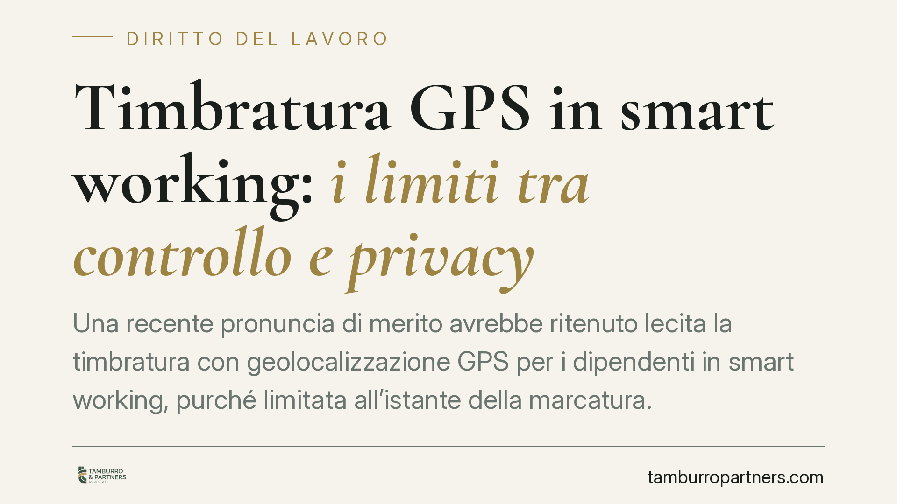

Timbratura GPS in smart working: i limiti tra controllo e privacy
Una recente pronuncia di merito avrebbe ritenuto lecita la timbratura con geolocalizzazione GPS per i dipendenti in smart working, purché limitata all'istante della marcatura. Il tema tocca il confine tra rilevazione delle presenze e controllo a distanza. Vediamo cosa dice la normativa e quali cautele restano indispensabili, al di là dell'esito del singolo caso.

Il caso, con una premessa di metodo
Secondo quanto riportato dalle cronache giuridiche, una pronuncia di merito avrebbe annullato una sanzione del Garante per la protezione dei dati personali, ritenendo lecito l'uso del GPS per la rilevazione delle presenze di lavoratori in smart working, a condizione che la localizzazione sia circoscritta al solo momento della timbratura.
Nota redazionale. Gli estremi esatti della sentenza e del provvedimento del Garante impugnato sono in corso di verifica. Trattandosi di una decisione di primo grado, essa non ha valore vincolante per altri giudici ed è soggetta a impugnazione. Le considerazioni che seguono valgono quindi come inquadramento del tema, non come commento a un precedente consolidato.
Inquadramento normativo
Il perno della disciplina è l'art. 4 della Legge 300/1970 (Statuto dei lavoratori). Il comma 1 vieta il controllo a distanza dei lavoratori, salvo che l'impianto risponda a esigenze organizzative, produttive, di sicurezza del lavoro o di tutela del patrimonio aziendale, e comunque previo accordo sindacale o autorizzazione dell'Ispettorato.
Il comma 2 esclude da questi vincoli gli strumenti utilizzati dal lavoratore per rendere la prestazione e quelli di registrazione degli accessi e delle presenze. Un sistema di marcatura, in linea di principio, rientra qui.
Attenzione, però: il comma 3 chiarisce che i dati raccolti attraverso questi strumenti restano utilizzabili solo nel rispetto degli obblighi di informativa e della disciplina in materia di protezione dei dati personali. L'esclusione del comma 2 riguarda l'autorizzazione preventiva, non gli obblighi privacy, che restano pienamente operativi.
Base giuridica: il nodo del consenso
Su questo punto occorre essere netti, soprattutto nel lavoro pubblico. Nel rapporto di lavoro il consenso del dipendente non è, di regola, una base giuridica idonea per il trattamento dei dati: lo squilibrio di potere tra le parti rende il consenso non genuinamente libero (considerando 43 del GDPR).
Per un ente pubblico la base corretta è l'adempimento di un obbligo legale o l'esecuzione di un compito di interesse pubblico (art. 6, par. 1, lett. c ed e, del GDPR). Quando una sentenza valorizza il "consenso informato" del lavoratore, quel riferimento va letto in chiave di trasparenza e informativa (artt. 13-14 GDPR), non come fondamento di liceità del trattamento.
Il principio di minimizzazione
Il vero criterio dirimente è il principio di minimizzazione dei dati (art. 5, par. 1, lett. c, GDPR): si possono trattare solo i dati adeguati, pertinenti e limitati a quanto necessario.
Da qui la distinzione decisiva tra tracciamento continuo e rilevazione istantanea. Localizzare il lavoratore per tutta la giornata sarebbe sproporzionato e integrerebbe un controllo a distanza. Acquisire la posizione nel solo istante della timbratura è, invece, un trattamento circoscritto, che verifica la presenza nel luogo pattuito senza monitorare gli spostamenti. È la differenza tra fotografare un momento e riprendere un intero turno.
Implicazioni pratiche
Per i datori di lavoro, pubblici e privati, il messaggio è duplice. Da un lato, i sistemi di marcatura geolocalizzata non sono vietati in assoluto. Dall'altro, la loro legittimità dipende da un impianto documentale rigoroso: definizione della base giuridica corretta, limitazione tecnica del trattamento al solo momento della marcatura, informativa chiara.
Per i lavoratori, resta il diritto di conoscere finalità, tempi di conservazione e modalità del trattamento, oltre alla garanzia che la posizione non venga rilevata al di fuori della timbratura.
Cosa fare in concreto
- Verificate l'inquadramento ex art. 4 L. 300/1970: accertate se il sistema rientri nel comma 2 o richieda accordo sindacale/autorizzazione ai sensi del comma 1.
- Individuate la base giuridica corretta: nel lavoro pubblico fondate il trattamento su art. 6, par. 1, lett. c/e GDPR, non sul consenso.
- Configurate la minimizzazione a livello tecnico: imponete che il GPS rilevi la posizione solo all'atto della marcatura, senza tracciamento continuo.
- Aggiornate l'informativa (artt. 13-14 GDPR): descrivete finalità, dati raccolti, tempi di conservazione e diritti dell'interessato.
- Valutate una DPIA: se il trattamento presenta rischi elevati, svolgete una valutazione d'impatto sulla protezione dei dati prima dell'avvio.
Consigliamo di non replicare soluzioni tecniche viste in altri contesti senza una verifica caso per caso: la legittimità dipende dai dettagli della configurazione e dalla documentazione a supporto.
Ogni storia di lavoro ha i suoi tempi.
Se gestisci HR e vuoi un confronto su contenzioso, ispezioni o licenziamenti, scrivi allo studio. Ti rispondiamo entro un giorno lavorativo.